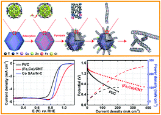

Center of Advanced Nanocatalysis


Latest Publications.
- Solid-Diffusion Synthesis of Single-Atom Catalysts Directly from Bulk Metal for Efficient CO2 Reduction

- Electroreduction of CO2 into value-added products is an effective approach to remit the environmental and energy issues. However, the development of an effective, accessible, and simple method for mass production of electrocatalyst is challenging. Herein, we demonstrate the solid-state diffusion between the N-doped carbon phase and bulk Ni metal can be utilized to synthesize hierarchical, self-supported, and atomistic catalyst. Strikingly, this hierarchical catalyst is programmable and scalable to meet the industrial demand and can be directly used as a binder-free electrode toward the CO2 electroreduction, delivering a state-of-the-art current density of 48.66 mA cm-2 at -1.0 V versus reversible hydrogen electrode (RHE) and high faradic efficiency of 97% to CO. The selectivity can be retained over 90% in a wide range of working potential of -0.7 to -1.2 V versus RHE. This solid-state diffusion strategy presents great potential to produce hierarchical and atomistic catalysts at industrial levels.
- Synergistic effect of well-defined dual sites boosting the oxygen reduction reaction
- 
- Herein, we construct a novel electrocatalyst with Fe–Co dual sites embedded in N-doped carbon nanotubes ((Fe,Co)/CNT), which exhibits inimitable advantages towards the oxygen reduction reaction. The electrocatalyst shows state-of-the-art ORR performance with an admirable onset potential (Eonset, 1.15 V vs. 1.05 V) and half-wave potential (E1/2, 0.954 V vs. 0.842 V), outperforming those of the commercial Pt/C. The ORR test reveals that the performance of the (Fe,Co)/CNT is superior to most of the reported non-precious catalysts in alkaline electrolytes. Furthermore, when employed as a cathode catalyst in a Zn–air battery, the (Fe,Co)/CNT exhibits high voltages of 1.31 V and 1.23 V at discharge current densities of 20 mA cm−2 and 50 mA cm-2, respectively. In addition, the power density and the specific energy density reach 260 mW cm-2 and 870 W h kgZn−1. We discover that the Fe–Co dual sites embedded in N-doped porous carbon are beneficial for the activation of oxygen by weakening the O=O bonds.
News
- 欢迎18级研究生韩霄、国文馨、王秋萍、颜牧雨加入 2018/9/01
- 欢迎博士后葛骁、杜俊毅、王志远、胡宜栋、熊灿、杨佳、周霄、祝泽周加入 2018/2
- 欢迎18级博士生薛正刚加入 2018/9/01
- 欢迎17级研究生王文玉、孙荣博、陈敏、晋本金、周方耀加入 2017/9/01
- 欢迎17级博士生赵亚飞、周煌加入 2017/9/01
- 欢迎博士后加入李智君、屈云腾、杨正坤、周奇加入 2017/9/01
- 实验室成员前往北京参加China nano会议 2017/8/29
Contact information
- Yuen Wu
- 96 Jinzhai Road, Hefei, Anhui 230026, P.R. China
- Tel: +86-13685510846 (Cell); 0551-63601600 (work)
- Education:2005.09–2009.07 B.S. Tsinghua University 2009.07–2014.07 Ph.D. Tsinghua University
- E-mail: yuenwu@ustc.edu.cn